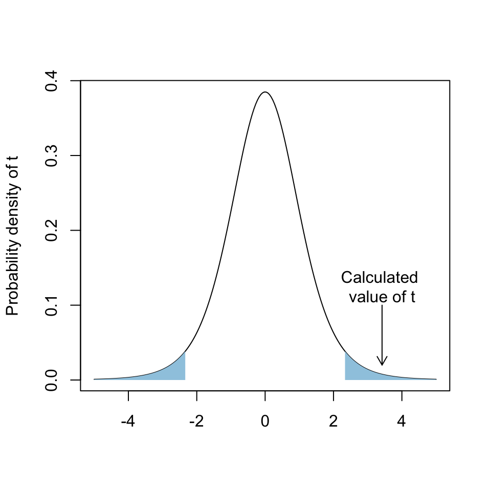

Two sample t-tests explained
In the previous tutorial we looked at the paired-sample t-test. This is a test carried out when we are comparing paired observations and the null hypothesis is that the mean difference between pairs of observations is zero. In the more common case of unpaired data we use the two-sample t-test, with the null hypothesis being that the difference between the means for the two groups is equal to zero. This video explains how the two-sample t-test works and how it differs from the paired-sample t-test.
Costs of reproduction in a cooperative breeder
Reproduction is costly to the individuals reproducing: this is widely accepted in biology and, of course, obvious to anyone who has ever had children. The nature of these costs is not always clear, however — in addition to straightforward costs in terms of energy and resources used there might be other costs incurred because of the degree of stress that reproducing organisms often experience. One aspect of this is potential oxidative damage caused when reactive oxygen species damage proteins, lipids and DNA. Normally these reactive oxygen species are kept at low levels by the body’s built in system of antioxidant defences, but during periods of stress this system might function less efficiently leading to increased oxidative damage during these periods.
Data on the role of oxidative stress during breeding is rare, especially from field systems, but in 2015 Cram and co-authors1 published a study of the white-browed sparrow weaver, Plocepasser mahali which addressed this. White-browed sparrow weavers are cooperatively breeding Southern African birds which live in groups of 2-12 birds. One pair in each group is the dominant pair which monopolises breeding, and the other birds provide assistance by helping provision the young as well as assisting with other tasks.

Figure 1 White browed sparrow weaver. Photo copyright Peter Steward, released under an Attribution Non-Commercial 2.0 Creative Commons license.
Cram et al. carried out an experiment where some nests had eggs removed, meaning that the costs of reproduction were reduced for the birds in the group associated with that nest, and other control nests were left as they were. The birds were caught and a variety of measures taken during the breeding season, including weight, the concentration of malondialdehyde (MDA, a product of lipid peroxidation and an indicator of oxidative stress) and superoxide dismutase activity (SOD, an enzyme which is important in antioxidant defence). The idea that they wished to test was that birds rearing young in small groups (four birds or fewer) should pay more costs than birds rearing young in large groups (more than four birds) and that this would be reflected in the response to removing the clutch from the nest: in small groups the effect of egg removal, which removes the costs associated with rearing young, would be stronger than in large groups.
The actual analysis carried out by Cram et al. involved a complex model fitting process which took account of some non-independence in the data, but here we will focus on using two-sample t-tests to compare responses from birds in small or large groups to clutch removal. Let’s start with the weights of the birds. We can import the dataframe, and we will declare the Treatment variable to be a factor:
weaver <- read.csv("https://github.com/rjknell/Basic_stats/raw/master/data/Cram_bird_repro_costs.csv")
weaver$Treatment <- as.factor(weaver$Treatment)As usual when we import a data set we use str() to have a look at its structure and make sure that everything’s as it should be.
str(weaver)'data.frame': 34 obs. of 6 variables:
$ Bird_ID : chr "expt155" "expt156" "expt157" "expt158" ...
$ Treatment : Factor w/ 2 levels "Eggs_left","Eggs_removed": 2 2 2 1 1 1 1 1 1 2 ...
$ GrpSize : int 2 5 5 6 6 6 5 5 5 4 ...
$ SOD_final : num 122 160 135 337 379 ...
$ MDA_final : num 2.18 4.08 3.66 2.73 2.92 3.97 4 NA 3.38 2.1 ...
$ mass_final: num 45.7 42.4 43.4 41 48.3 ...We have our response variables: mass_final, MDA_final and SOD_final, plus the ID of the individual bird, the treatment and the group size. We’ll analyse the mass data to start with. Before we go any further with our analysis we should plot a graph of mass versus treatment for our large and our small groups. Since our sample size is small we’ll use a strip chart rather than a boxplot, which we can do with the stripchart() function. Here, the code is all there for the first stripchart which is for birds from groups of four of fewer animals. See if you can add in a similar block of code that will draw the equivalent plot but for birds from large groups with more than four animals.
# Plot two graphs side by side
par(mfrow = c(1,2))
# stripchart for birds from small groups
stripchart(
weaver$mass_final ~ weaver$Treatment,
subset = weaver$GrpSize <= 4,
vertical = TRUE,
pch = 1,
col = "darkgreen",
ylab = "Final bird mass (g)",
main = "Small groups"
)
# stripchart for birds from large groups# Use the code for the first stripchart.
# You only need to change the group size
# and the title# Here is the solution
# Plot two graphs side by side
par(mfrow = c(1,2))
# stripchart for birds from small groups
stripchart(
weaver$mass_final ~ weaver$Treatment,
subset = weaver$GrpSize <= 4,
vertical = TRUE,
pch = 1,
col = "darkgreen",
ylab = "Final bird mass (g)",
main = "Small groups"
)
# stripchart for birds from large groups
stripchart(
weaver$mass_final ~ weaver$Treatment,
subset = weaver$GrpSize >4,
vertical = TRUE,
pch = 1,
col = "darkgreen",
ylab = "Final bird mass (g)",
main = "Large groups"
)What we’re looking for here is firstly any sort of pattern in the data that might indicate some sort of effect, and secondly any indication of potential problems with the data such as data points with unlikely, anomalous or impossible values such as birds with negative weight or which weighed so much that they couldn’t fly; obvious and severe skew or other weird frequency distributions and so on. There aren’t any immediately obvious problems like this with these data: the values are all believeable and there’s no skew or similar that can be seen. In terms of patterns in the data, you can see that there seems to be an effect of clutch removal for the small group birds but not the large group birds, such that birds from groups with clutches rmoved are all heavier in small groups but not in large groups. We can’t have much confidence in this pattern at the moment, however, because we cannot dismiss the idea that this pattern could have arisen by sampling error. The small sample size makes this uncertainty greater.
- Cram, D.L., Blount, J.D. & Young, A.J. (2015) The oxidative costs of reproduction are group-size dependent in a wild cooperative breeder. Proceedings of the Royal Society B: Biological sciences, 282: 20152031.
t-test for the weight data in small groups
What we can do is a statistical test to ask whether the differences between the mean bird masses for the two groups are significantly different for both birds from small groups and birds from large groups. We know that this two-sample t-test works in a similar way to the paired sample t-test which we looked at in the last tutorial, but this time we are askign whether the difference between the means is sufficiently far from zero as to be considered unlikely, rather than the mean of the differences which is what we look at in a paired sample test.
The formula to calculate our test statistic, t for a two sample t-test with equal or unequal sample sizes is:
\[ t = \frac{\bar{x}_1 - \bar{x}_2}{s_p \sqrt{\frac{1}{n_1} + \frac{1}{n_2}}},\] where \(\bar{x}_1\) and \(\bar{x}_2\) are the means of the two groups. \(s_p\) is something called the “pooled standard deviation”. Its calculation is a bit intimidating but conceptually it’s reasonably straightforward — it is the average standard deviation for all groups in the dataset, with the individual groups weighted by their sizes so that larger groups have more influence.
To put it another way, you might recall that you can think of the standard deviation as the average distance of all the data in a sample from the mean. The pooled standard deviation is the average distance of all the data in a grouped sample from the group mean.
This is the formula for \(s_p\) when there are two groups. Don’t worry if you don’t like the look of this equation, you don’t need to know it to understand the t-test.
\[s_p = \sqrt{\frac{\left(n_1 - 1 \right)s^{2}_1 + \left(n_2 - 1 \right)s^{2}_2}{n_1 + n_2 -2}},\] where \(s^{2}_1\) and \(s^{2}_2\) are the variances of groups 1 and 2, and \(n_1\) and \(n_2\) are their respective sample sizes.
Here is a code framework that should calculate t for you if you fill in the missing parts denoted by XXs. Notice that we’re using subscripts to specify only the data that correspond to certain factor levels in Treatment — if this is something you’ve forgotten you might need to revise this from your introductory R work. Some things you might want to know: * The two levels of the Treatment factor are Eggs_removed and Eggs_left * mean() calculates the mean of a vector * var() calculates the variance * sqrt() calculates the square root and * length() returns the number of items in the vector: this is a way of getting the sample size for a group.
# Use subset to create a new data frame with only the birds from small groups
weaver_small <- subset(weaver, weaver$GrpSize <= 4)
# Calculate the means
mean1 <- mean(weaver_small$mass_final[weaver_small$Treatment == "Eggs_removed"])
mean2 <- mean(weaver_small$mass_final[weaver_small$Treatment == "XXXX"])
# Calculate the two variances
var1 <- var(weaver_small$mass_final[weaver_small$Treatment == "XXXXX"])
var2 <- XXX(weaver_small$mass_final[weaver_small$Treatment == "Eggs_left"])
# Calculate the sample sizes
n1 <- length(XXXX)
n2 <- XXXXX(weaver_small$mass_final[weaver_small$Treatment == "Eggs_left"])
# Calculate the pooled standard deviation
sp <- sqrt(((n1-1)*var1 + (n2-1)*var2)/(n1 + n2 -2))
# Calcaulate t
t_calc <- (XXXXX - XXXXX)/(sp + sqrt(1/n1 + XXXXX/XXXXX))
# Output
cat("The value of t is ", t_calc)# Use subset to create a new data frame with only the birds from small groups
weaver_small <- subset(weaver, weaver$GrpSize <= 4)
# Calculate the means
mean1 <- mean(weaver_small$mass_final[weaver_small$Treatment == "Eggs_removed"])
mean2 <- mean(weaver_small$mass_final[weaver_small$Treatment == "Eggs_left"])
# Calculate the two variances
var1 <- var(weaver_small$mass_final[weaver_small$Treatment == "Eggs_removed"])
var2 <- var(weaver_small$mass_final[weaver_small$Treatment == "Eggs_left"])
# Calculate the sample sizes
n1 <- length(weaver_small$mass_final[weaver_small$Treatment == "Eggs_removed"])
n2 <- length(weaver_small$mass_final[weaver_small$Treatment == "Eggs_left"])
# Calculate the pooled standard deviation
sp <- sqrt(((n1-1)*var1 + (n2-1)*var2)/(n1 + n2 -2))
# Calculate t
t_calc <- (mean1 - mean2)/(sp * sqrt(1/n1 + 1/n2))
# Output
cat("The value of t is ", t_calc)If the null hyothesis, which in this case is that both groups are drawn from populations with equal means, were true, we would expect this value to follow a t-distribution on n1 -1 + n2 -1 degrees of freedom. n1 is 4 and n2 is five, so the number of degrees of freedom is seven. As we did with the paired-sample t-test, we can plot out the probability distribution of t on 7 df and see how likely we might be to get a value as big as (or bigger than) our calculated value.

Figure 2. t-distribution on 7 degrees of freedom. The blue shaded areas indicate the area of the graph within which we would expect 5% of the values to be found: in other words, if we selected a value at random from the t-distribution it would be found in one of the shaded areas 5% of the time.
Here, you can see that our calculated value is well within the region of the curve where we would only expect a value of t to fall 5% of the time if the null hypothesis were true. This means that if the null hypothesis were true we would only see a difference between the two means as large as, or larger than, the one we got somewhat less than 5% of the time. We can get an exact p-value by asking R:
2 * pt(3.42, df = 7, lower.tail = FALSE)[1] 0.01113541What does this p-value mean?
t-test for the weight data using the t.test() function
We’ve seen that we can calculate our test statistic from first principles and calculate a p-value from that, but of course R has a built in function to do t-tests, called, as you might recall from the paired sample tutorial, t.test().
Whereas before we used subset() to generate a new data frame with only those birds from small groups, when we’re using t.test() we can include a subset = argument in the function call itself to analyse only a part of a dataset. For a two-sample t-test we can give the response variable (in this case mass_final) and the explanatory variable (Treatment) as the first and last components of a formula, separated by a tilde, much as you would for a plot. So our t-test function call looks like this.
t.test(weaver$mass_final ~ weaver$Treatment,
subset = weaver$GrpSize <= 4)
Welch Two Sample t-test
data: weaver$mass_final by weaver$Treatment
t = -3.6656, df = 6.3656, p-value = 0.009467
alternative hypothesis: true difference in means is not equal to 0
95 percent confidence interval:
-7.766857 -1.600143
sample estimates:
mean in group Eggs_left mean in group Eggs_removed
42.7240 47.4075 So that all agrees with our calculated values then and everything’s fine? No…. this doesn’t give us the same output. The t-value is different (-3.66 versus 3.42 — don’t worry about the signs which are arbitrary for a two-tailed t-test, it’s the diffence in absolute values that’s important), the degrees of freedom are different and, in this case, fractional (6.37 versus 7) and the p-value is different (0.0095 versus 0.011). Why the difference? The answer can be found in the first line of the output where it reads “Welch Two Sample t-test”. This is the default option for a two sample t-test in R, and it uses an adjustment of the standard t-test which makes allowance for differences between the variances of the two groups.
The ‘ordinary’ Student’s t-test only really works well when the two groups being compared have roughly equal variances. The Welch t-test works when the variances differ between groups. The value of t is calculated in a slightly different way, and the degrees of freedom are adjusted according to how different the variances are, which accounts for the differences between the values we’ve seen here. It’s been argued that the Welch t-test should be used a lot more 2, and some people have argued that it should be used as standard unless there is good reason not to 3.
If we want to run a basic Student’s t-test without adjusting for unequal variances, we can add an argument to our t-test function call to do this. Have a look at the help file for t.test and see if you can work out how to do this.
Click here for more on t-tests without the Welch method
Hopefully you found out that the argument to add is var.equal = TRUE. See if you can adjust our t-test function call to give a standard t-test. This should give the same values for t, df and p as we calculated in the last section.
t.test(weaver$mass_final ~ weaver$Treatment,
subset = weaver$GrpSize <= 4)t.test(weaver$mass_final ~ weaver$Treatment,
subset = weaver$GrpSize <= 4,
var.equal = TRUE)Finally, let’s do another t-test to compare body mass between egg-removal and control treatments for birds from groups larger than 4. Remember that with t.test() you can use the subset = argument to choose a particular set of observations. We’ll use the default option of the Welch t-test which allows us to use unequal variances.
# Here is the solution
t.test(weaver$mass_final ~ weaver$Treatment,
subset = weaver$GrpSize > 4)Take a look at this output, and try to answer the following questions
Ruxton, G.D. (2006) The unequal variance t-test is an underused alternative to Student’s t-test and the Mann–Whitney U test. Behavioral ecology: official journal of the International Society for Behavioral Ecology, 17, 688–690.
Delacre, M., Lakens, D. & Leys, C. (2017) Why Psychologists Should by Default Use Welch’s t-test Instead of Student’s t-test. International Review of Social Psychology, 30, 92–101.
Testing for oxidative stress in the small groups
Now we will look at the data on oxidative stress, specifically the malondialdehyde (MDA) levels and superoxide dismutase (SOD) activity. To keep things simple we’ll just look at birds from the small groups, so we’ll generate a new data frame that just has the data for groups of four birds or fewer (you might recall we did something similar to plot the mass data):
weaver_small <- subset(weaver, weaver$GrpSize <=4)As always, we’ll start by visualising our data. We’ll use a strip chart to visualise the differences between the egg removal and control treatment birds for MDA, starting with MDA. This code was previously used to plot the mass data : see if you can modify it to draw the MDA data from our weaver_small data frame.
# stripchart for birds from small groups
stripchart(
weaver$mass_final ~ weaver$Treatment,
subset = weaver$GrpSize <= 4,
vertical = TRUE,
pch = 1,
col = "darkgreen",
ylab = "Final bird mass (g)",
main = "Small groups"
)# You need to:
# 1. Change the name of the data frame from
# "weaver" to "weaver_small" throughout
#
# 2. Get rid of the subset = arguments in the
# stripchart function calls
#
# 3. Change the names of the first variable
# in the response ~ explanatory formula that
# is at the start of the stripchart function
# call
#
# 4. Change titles and axis labels as appropriate# Make sure there is a comma between each argument
# and that all your brackets match# Here's the solution
# stripchart for MDA
stripchart(
weaver_small$MDA_final ~ weaver_small$Treatment,
vertical = TRUE,
pch = 1,
col = "darkgreen",
ylab = "MDA level",
main = "MDA"
)Looking at this plot, we can see that there appears to be something of a difference between the two treatments, with the birds from the egg removal groups having, in general, lower MDA levels than those from the control groups. We can also see that there are no obvious red flags in terms of data points with extreme values or obviously problematic data distributions. Let’s do our t-test. We’ll use the default Welch t-test.
# Remember to use data from the weaver_small data frame
# The response variable is MDA_final
# The explanatory variable is Treatment
# You don't need to subset the data or
# specify anything else# Here is the solution:
t.test(weaver_small$MDA_final ~ weaver_small$Treatment)Take a look at this output, and try to answer the following questions
Last one is the SOD data. Hopefully by now you should have the hang of this. First of all you need to visualise your data. Here’s the code for the MDA plot, see if you can modify it for the SOD data.
# stripchart for MDA
stripchart(
weaver_small$MDA_final ~ weaver_small$Treatment,
vertical = TRUE,
pch = 1,
col = "darkgreen",
ylab = "MDA level",
main = "MDA"
)# Change the name of the first variable in the formula
# Change axis labels and title as appropriate# This is the solution
# stripchart for SOD
stripchart(
weaver_small$SOD_final ~ weaver_small$Treatment,
vertical = TRUE,
pch = 1,
col = "darkgreen",
ylab = "Superoxide Dismutase activity",
main = "SOD"
)Once again, there don’t seem to be any problematic data points or obviously difficult distributions. It’s hard to see of there’s any difference between the two groups, but we can run a t-test which should help us out.
# You just need to use the same code
# as for MDA and replace the first
# variable in the formula# This is the solution
t.test(weaver_small$SOD_final ~ weaver_small$Treatment)If you’ve got this far you won’t be surprised by this final quiz about the SOD t-test output.